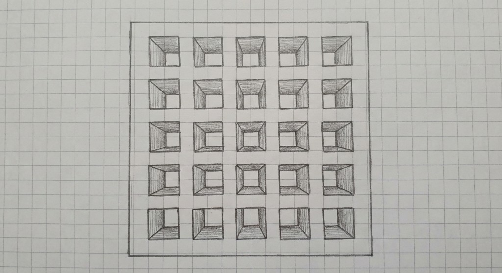
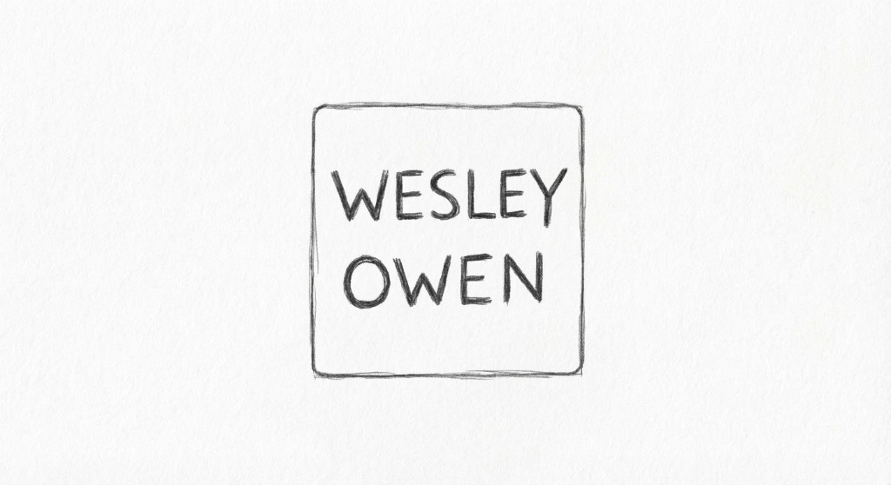
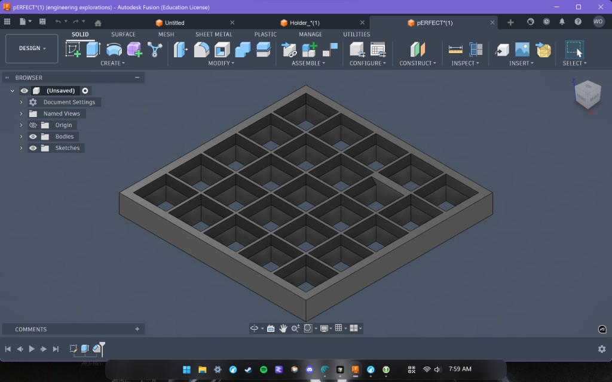
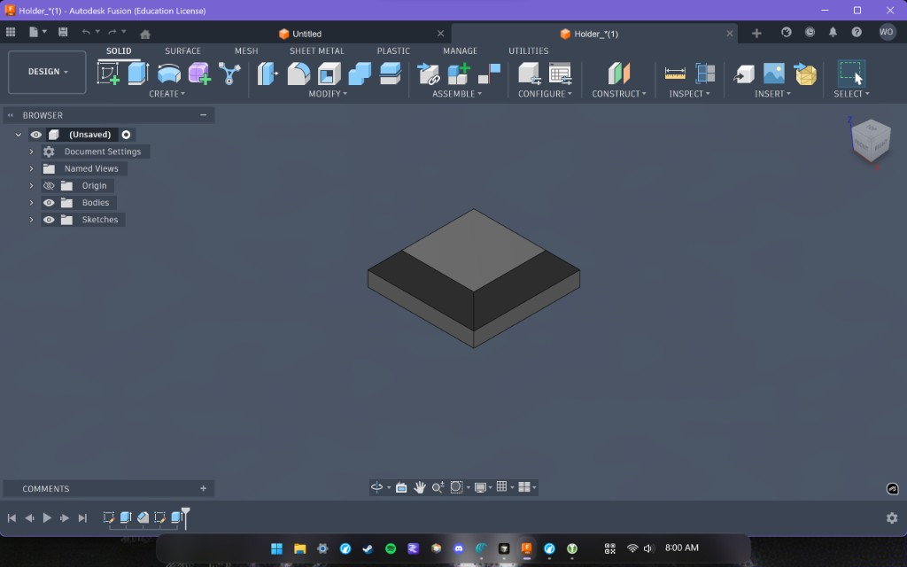

Game Design
Engineering Design Process
Problem Identification
For this project I wanted to make a small Guess Who game for our engineering class.
Research and Constraints
I looked online for ideas and found different 3D printed Guess Who boards. I also had to keep the design simple enough to work with the time we had in class.
Brainstorming and Ideation
After looking at other ideas I decided to simplify the game. I moved away from flip-up pieces and started thinking about a board with pop-out squares.
Design Sketches or Models
The final design was a 5x5 board where each square represented a person from our engineering class.


Iterations and Improvements
I made changes to simplify the design and make it more realistic to build. The biggest change was using pop-out squares instead of flip-up parts.
Final Solution
The final idea was a simple class-themed Guess Who board made for 3D printing. I never got to print the final version because class was very busy.


Overall Project Reflection
This project helped me learn more about designing for 3D printing. It also showed me that a design may need changes before it is ready.
If I did it again I would test the fit of the pieces earlier.